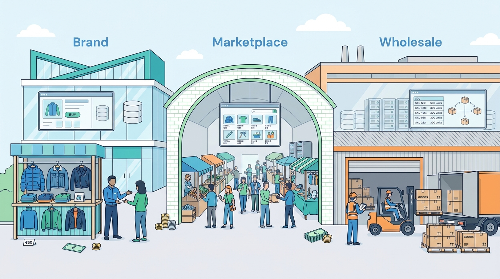

Part I — COMMERCE: What a Commerce Platform Is
Who Sells What to Whom: Business Models and the Economics That Shape Architecture
AI-assisted: researched and written with Claude Code, images generated with the Gemini API. How this works

Part I — COMMERCE: What a Commerce Platform Is
AI-assisted: researched and written with Claude Code, images generated with the Gemini API. How this works
